A kitchen island that's clean and functional but still feels like something's missing usually just needs one thing: a centerpiece that earns its spot instead of getting shoved aside every time someone starts cooking.
The island already anchors the room on its own. A thoughtful centerpiece on top of that sets the mood, adds real personality, and keeps the space from ever feeling unfinished, without eating into the prep space that makes the island useful in the first place.

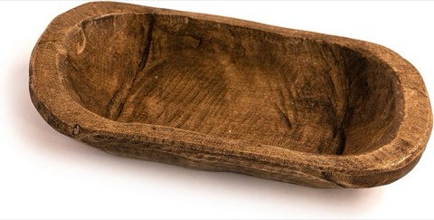
Red Barn Candle Company Wooden Dough Bowl, 10 x 6 Inch, Rustic Wood Bowl Decor
Shop on AmazonWhat Actually Makes a Centerpiece Work
Size and scale matter more than style preference here, a large island can handle something bold, while a smaller one needs real restraint. Beyond that, daily use settles most of the rest: anything that blocks sightlines or eats into prep space gets abandoned within a week, no matter how good it looks in a photo. One strong, considered piece will always beat five small random objects scattered across the surface.
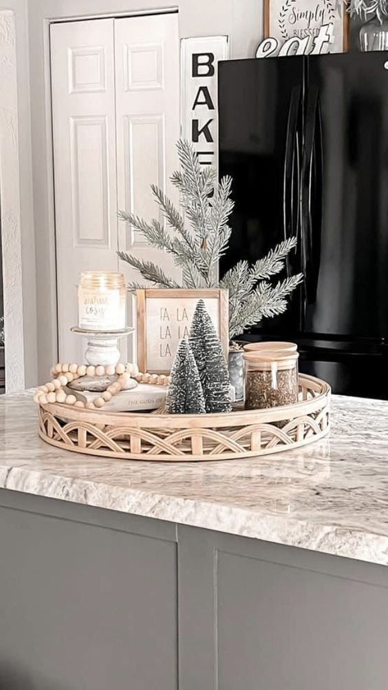
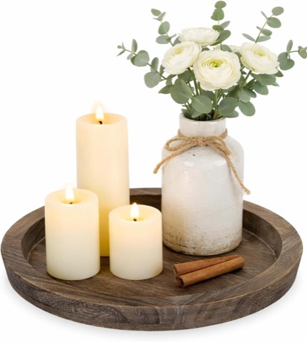
Hanobe Round Wooden Candle Holder Tray for Coffee Table, Distressed Finish
Shop on Amazon14 Kitchen Island Centerpiece Ideas
1. Mixed Materials for a Designer Look
This is the approach that reads as the most high-end, and it's simpler to pull off than it looks, just mix materials with intention instead of sticking to one.
Pair a wood dough bowl with a glass vase, or a ceramic bowl with a metal tray and a stone object. The contrast between textures is what adds the depth.
Done right, it instantly elevates a builder-grade kitchen into something that reads as considerably more designed.
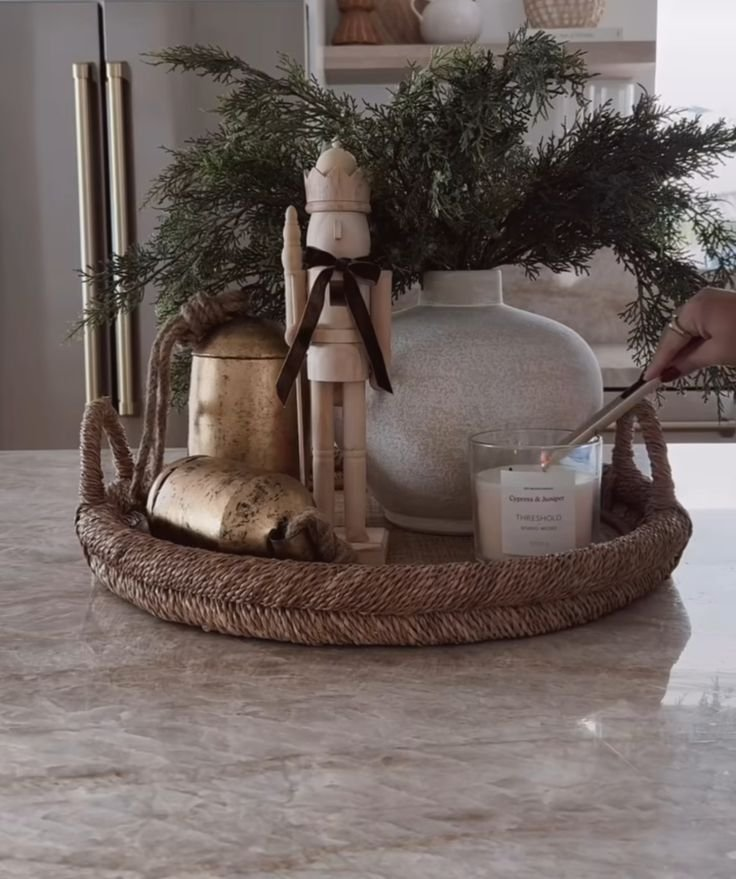

2. A Statement Bowl With Decorative Objects
For a larger island, filling a bowl with curated objects instead of food shifts it from functional to genuinely decorative.
Ornaments, small sculptural pieces, or a cluster of neutral spheres all work, as long as the color palette stays tight throughout.
Mixing too many colors or textures into one bowl kills the elegance fast, keep it restrained and it reads as considered instead of cluttered.
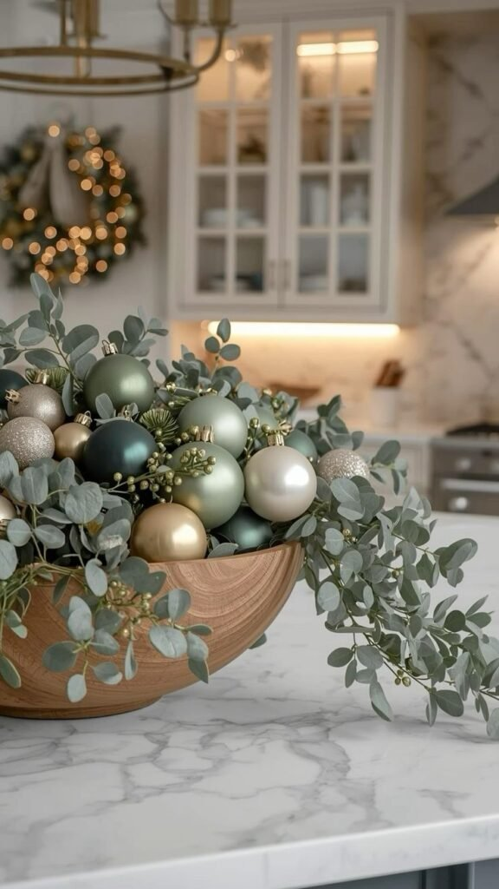
3. Seasonal Decor That Rotates Effortlessly
A centerpiece that evolves with the seasons keeps an island feeling fresh without requiring a full redesign every few months.
Dried wheat and pumpkins in fall, greenery and candles in winter, fresh blooms in spring, the base styling stays the same while the details rotate.
Rotating decor is also what keeps a kitchen from ever starting to feel stale, even when the underlying layout never changes.
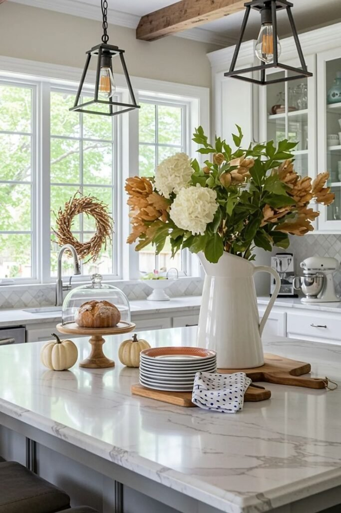
4. Clustered Canisters That Look Intentional
Canisters don't have to live inside a cabinet. Grouped together on the island, they double as decor while staying completely practical.
A matching set in varying sizes, labeled simply, reads as styled rather than just stored. Add a small plant or sprig of greenery alongside them for contrast.
The result feels practical and polished at the same time, which is a combination that's harder to pull off than it looks at first.
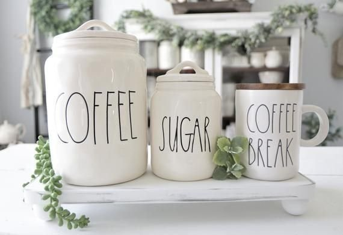
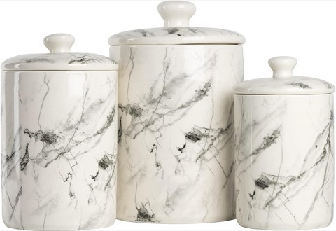
10 Strawberry Street Marble Ceramic Kitchen Canister Set, 3 Pcs, White and Black
Shop on Amazon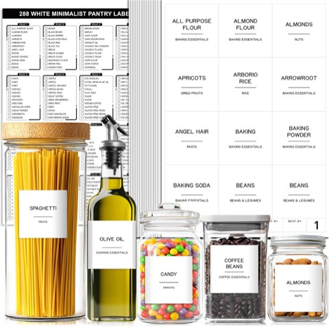
Pantry Labels for Food Containers, 288 Pcs, Minimalist Waterproof Stickers
Shop on Amazon5. A Sculptural Object for Modern Kitchens
Modern kitchens thrive on bold simplicity, and a single sculptural object fits that approach better than almost anything else on this list.
Look for abstract shapes, matte finishes, and neutral tones that complement a sleek, polished kitchen rather than fighting against it.
It adds genuine interest without softening the space too much, which is exactly the balance a modern kitchen usually needs.
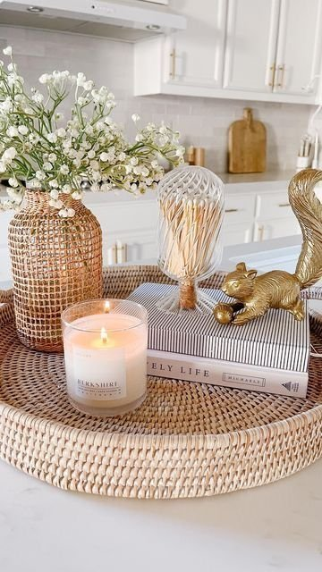
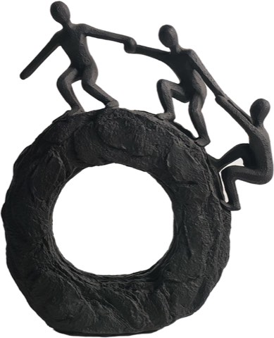
Abstract Climbing Figures Sculpture, Black Statue for Living Room and Office
Shop on Amazon6. Vintage Cutting Boards With Character
Leaning a few cutting boards against the backsplash or propping them upright adds height and real character without cluttering the usable island surface.
Mix sizes and finishes, a worn wooden board next to a smoother one adds visual interest that a matching set never quite manages.
They whisper style rather than shout it, which is exactly the kind of quiet detail that tends to age well over time.
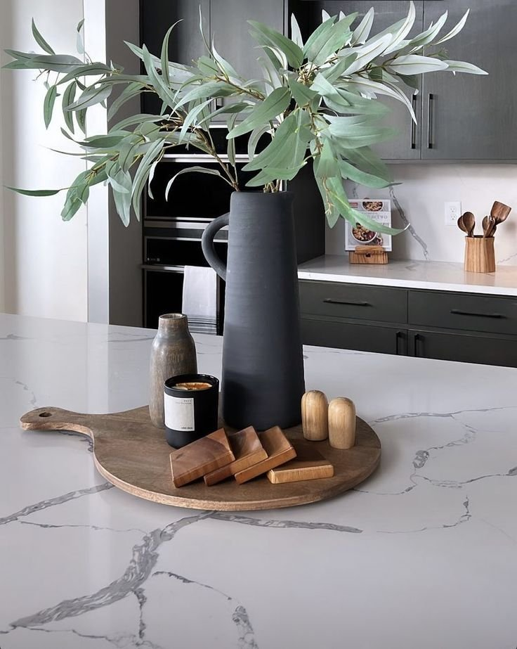
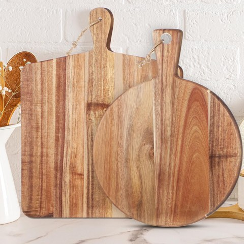
Hsei Wood Cutting Boards with Handle, 2 Pcs, Vintage Charcuterie Boards
Shop on Amazon7. A Functional Fruit Display That Looks Styled
Decor that pulls double duty is always worth prioritizing, and a well-arranged fruit display does exactly that.
Group by color and type rather than mixing everything together, bananas next to apples next to oranges reads as messy no matter how fresh the fruit is.
Keeping it curated rather than piled high is what separates a styled fruit bowl from a kitchen catch-all.
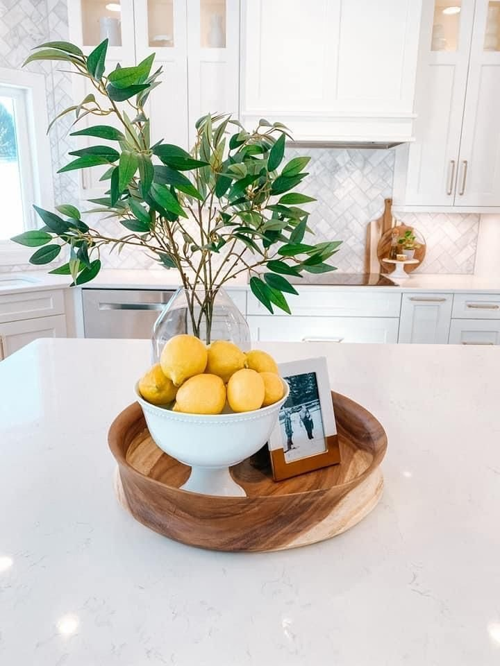
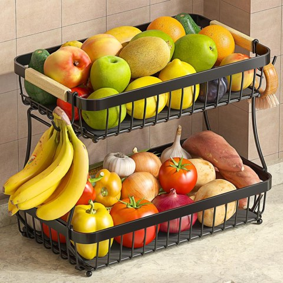
Sevenblue 2-Tier Fruit Basket with Banana Hangers, Detachable Metal Bowl
Shop on Amazon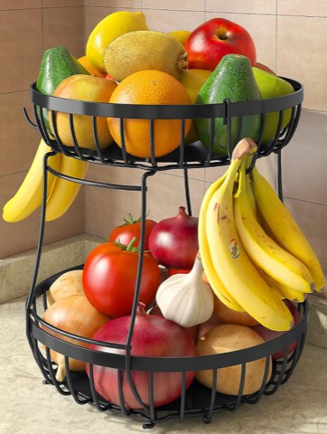
Sevenblue 2-Tier Large Fruit Bowl for Kitchen Counter with 2 Banana Hangers
Shop on Amazon8. A Minimalist Candle Trio for Subtle Elegance
Candles bring mood to an island without trying too hard, which is exactly why a trio of them in varying heights works so well.
Keep the finishes consistent, all matte white, all black, all a single neutral tone, so the trio reads as one considered choice rather than three random candles.
It fits modern kitchens especially well, adding warmth and intention without ever competing for attention.
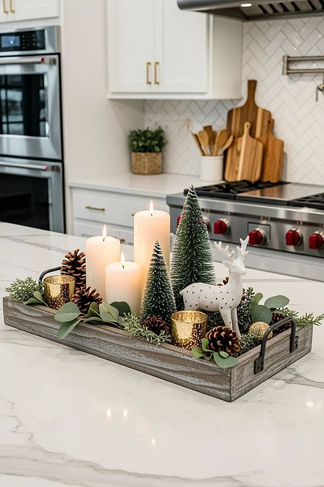
9. A Tall Floral Arrangement for Dramatic Impact
For an island in a large, open kitchen, going tall makes real sense, especially in a home with high ceilings that can otherwise swallow smaller decor.
Dried pampas grass, tall branches, or a single dramatic stem all read as intentional rather than overdone, as long as the arrangement stays narrow.
Keep the width tight so it doesn't block sightlines across the island. Nobody wants to carry on a conversation around a wall of flowers.
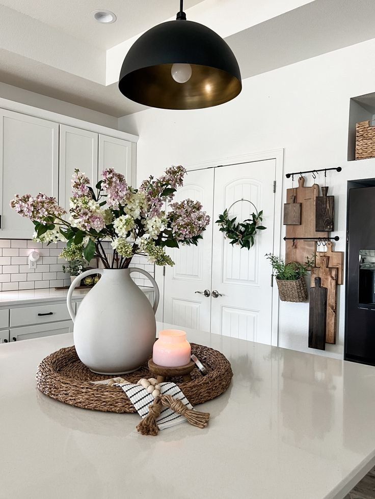
10. A Sculptural Vase That Acts Like Art
A sculptural vase doesn't need flowers in it to earn its spot, the shape alone can carry the whole centerpiece.
Look for organic curves, an unusual silhouette, or a matte finish that reads as more object than vessel.
One bold vase beats a cluttered arrangement every time. Let it sit on its own and give it room to actually breathe.
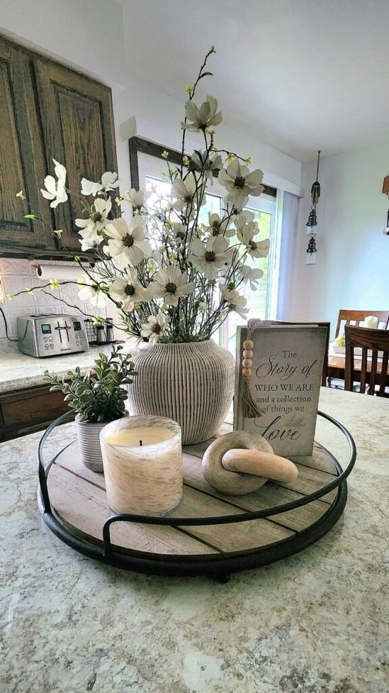
11. Fresh Greenery to Bring the Island to Life
Few things do as much for a kitchen island as greenery. It's the fastest way to make a hard, flat surface feel alive instead of static.
A trailing pothos, a small potted herb, or a single stem in a narrow vase all work, and none of them require much upkeep to look good.
Greenery softens every hard surface around it instantly, which is reason enough for it to belong on almost any version of this list.
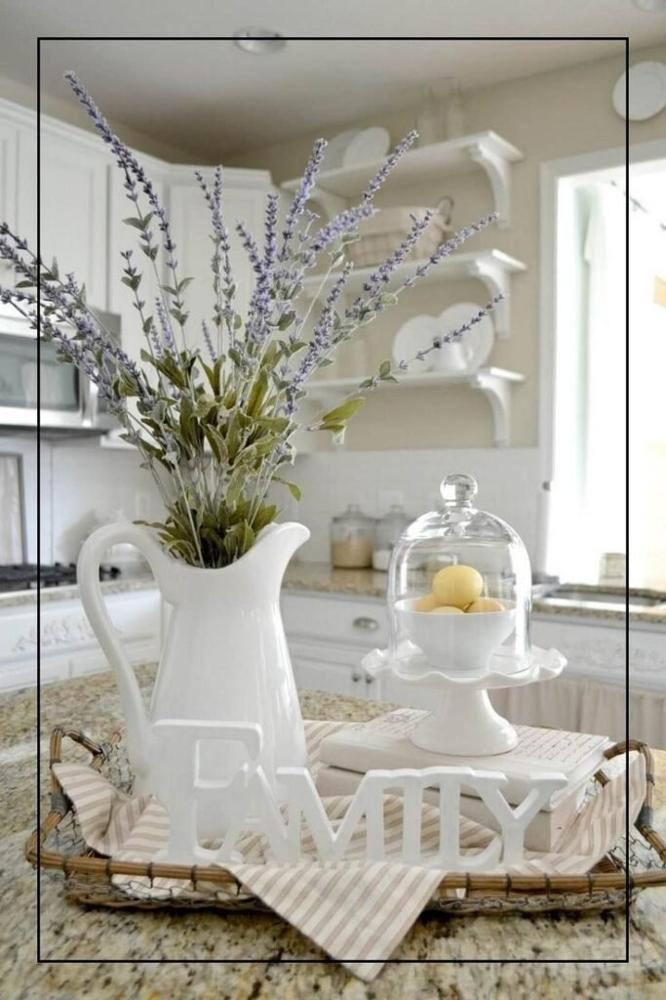
12. A Statement Tray With Layered Decor
A tray gives loose decor the structure it's otherwise missing. Objects placed directly on an island can look random; the same objects on a tray read as intentional.
Stick to odd numbers when grouping items on it, three or five pieces consistently look more balanced than an even number does.
The tray also makes the whole arrangement easier to move out of the way during actual prep work, which matters more than it sounds like it should.
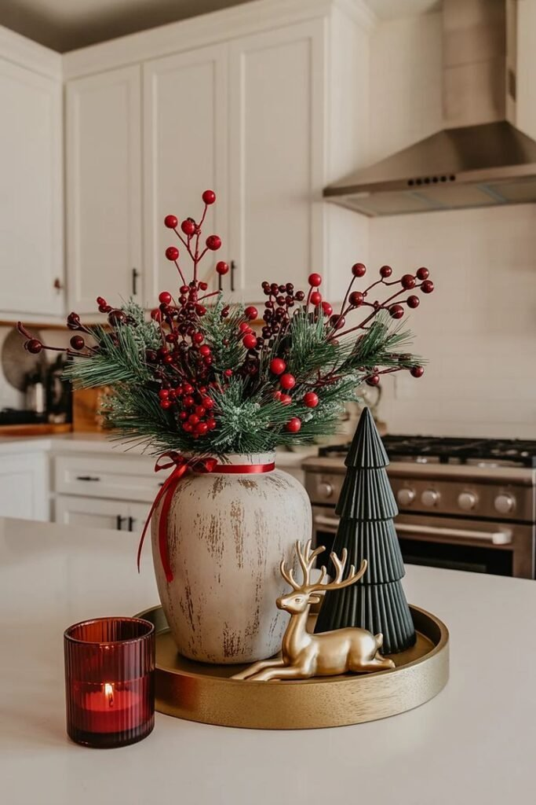
13. An Oversized Ceramic Bowl With Seasonal Flair
A large ceramic bowl is one of the most reliable centerpieces out there, classic, grounded, and genuinely versatile across styles.
Fill it with seasonal fruit, ornaments, pinecones, or whatever fits the time of year. The bowl itself stays constant while the contents do all the seasonal work.
It anchors the island without overpowering it, and swapping what's inside takes minutes whenever the mood changes. Low effort, consistently good payoff.
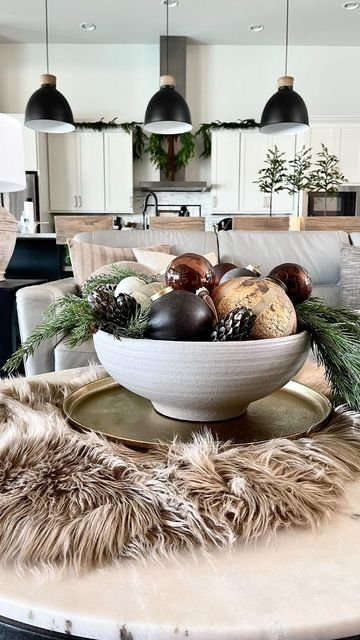
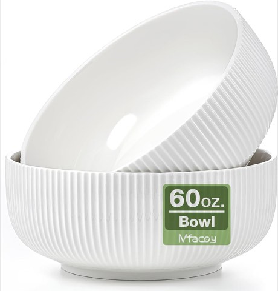
Mfacoy Ribbed Salad Bowl Set, 2 Pack, 8 Inch, 60 Oz, Large White Ceramic
Shop on Amazon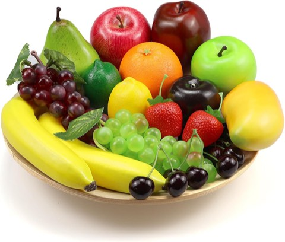
Artificial Fruit Pack, 20 Pcs, Realistic Fake Fruit for Table Centerpieces
Shop on Amazon14. A Wooden Dough Bowl for Cozy Texture
Dough bowls still work, whatever anyone says otherwise, and they earn their keep constantly in warm, lived-in kitchens.
The shape does most of the work, long, shallow, and naturally textured in a way that softens an otherwise hard-surfaced island.
Fill it with beads, greenery, or leave it completely empty. An empty dough bowl reads as just as intentional as a styled one, which is part of why it's such a reliable choice.
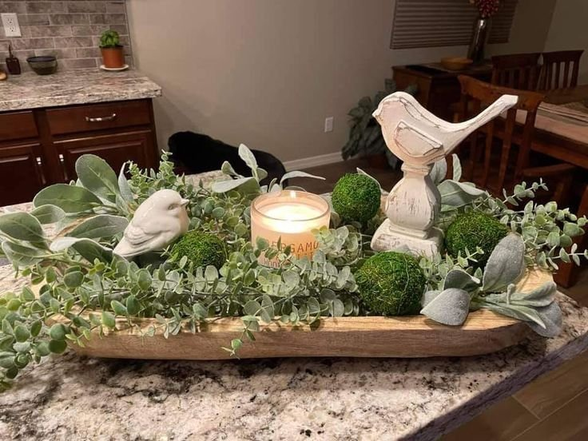
Red Barn Candle Company Wooden Dough Bowl, 10 x 6 Inch, Rustic Wood Bowl Decor
Shop on AmazonANDALUCA Large Decorative Balls Bowl Filler Orbs, White and Cream
Shop on AmazonFinal Thoughts
A kitchen island deserves better than being ignored, and the right centerpiece turns it into a genuine design moment instead of a missed opportunity.
The best ones balance beauty, function, and a little personality, nothing forced, nothing that has to move every time someone starts cooking. Choose something worth looking at, keep it simple, and swap it out whenever the mood actually calls for it.